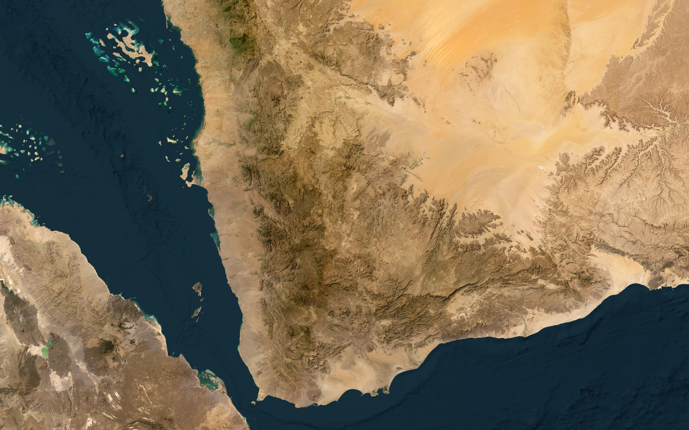

1 Summary TESTTT
In September 2026 the Houthis took the Red Sea coast down to the strait of Bab al-Mandab, mostly as government forces pulled back (Al Jazeera, 10 Sep[2]; Al Jazeera, 11 Sep[3]). On 5 October the government answered with Operation Fajr al-Yemen (Dawn of Yemen), announced the day before, and took Dhubab airport (Al Jazeera, 5 Oct[4]; BBC, 6 Oct[5]; GeoConfirmed, 16 Nov[6]). Reuters later said the offensive retook Dhubab (Al-Monitor, 15 Nov[7]). On the peninsula itself it stalled on a line about 10 km long across the north and east of the hills. We found no footage placing government forces south-west of it, in the lagoon, Bab al-Mandab village, the mountain block or on Mayun (our assessment). On 15 November the southern forces announced a "redeployment" to defend Aden (Al-Monitor, 15 Nov[7]). Two Houthi videos, one published on 15 November and one known from a repost of 16 November, show at least 60 vehicles wrecked or abandoned on that front, at least 41 of them armored (video 1[8]; video 2[9]; our vehicle register). In our assessment most were lost in the first days of the offensive and in the attempts to advance that followed, not in the withdrawal. The footage itself dates only three: a Houthi video reposted on 14 October already shows #7 and #27 stopped and a vehicle burning where #26 lies.
Replacing what was filmed wrecked or abandoned would cost at least $8.4M for the identified armor and its roof mounts, $9.1M with the pickups and technicals, and up to about $20M with every price at its high end and the doubtful vehicles added (our vehicle register). 22 of the 35 identified vehicles are UAE-made, and the UAE left Yemen in January 2026. We found no record of who replaces them (Al-Monitor, 5 Feb[10]).
In proportion (§5), the money is small: under 0.04% of Saudi Arabia's 2026 military budget. The count is not: at least 41 armored vehicles on one road, 51 of the 54 located inside about 15 km², for about 15 km of road that was handed back. Saudi air power, heavy in the first days, could not dig the Houthis off the heights. For the PLC the offensive ended with its claims denied, the Houthis nearer Aden and the southern units asking what it was for. In our assessment the withdrawal itself was sound; the failure lies in the advance that preceded it.
2 1. What it cost
2.1 What the two videos show
The Houthi military media published a ground tour from the outskirts of Dhubab to Bab al-Mandab on 15 November (video 1). Drone footage of the same area is known from a repost of 16 November by @bonzerbarry (video 2); when it was filmed is unknown. We counted each physical vehicle once across both videos (our vehicle register). The count below is a floor. It covers only what these two videos show, and other footage exists.
- At least 60 vehicles, 19 of them seen in both videos (our vehicle register).
- At least 41 armored vehicles: 35 matched to a model, 25 confirmed and 10 almost sure (7 Tygor E1, 2 Al-Wahsh, the JAIS), and 6 more whose model is unknown.
- 12 unarmored or lightly armored vehicles: pickups, technicals, a wheel loader and one armored pickup. Some of these may be Houthi vehicles rather than government losses. We think it unlikely, but we cannot rule it out, so the armored vehicles are the solid part of the count.
- 7 more shapes seen from too far to type, one of them a pile of wrecks.
| Model | Maker, country | Count (at least) | Grade | Unit price, low-high | Price basis |
|---|---|---|---|---|---|
| Harrow Tygor E1 | Harrow Security Vehicles, UAE | 8 (7 almost sure) | almost sure (#35 confirmed) | $120k-$250k | class estimate |
| Streit Cougar | Streit Group, UAE | 8 | confirmed | $150k-$250k | class estimate |
| Oshkosh M-ATV | Oshkosh Defense, USA | 7 | confirmed | $470k-$900k | US Army order, 2009 (Oshkosh[11]) |
| Al-Wahsh | JLVM, Jordan | 2 | almost sure | $250k-$500k | class estimate |
| BATT UMG | The Armored Group, USA / UAE | 2 | confirmed | $200k-$300k | about $230k (Defence24[12]) |
| Streit Cobra LAMV | Streit Group, UAE | 2 | confirmed | $150k-$280k | class estimate |
| Streit Spartan-SUT | Streit Group, UAE | 2 | confirmed | $180k-$350k | class estimate |
| BMC Kirpi II | BMC, Türkiye | 1 | confirmed | $335k-$750k | older Kirpi contracts, partly published |
| ERAF Tares III | ERAF Industrial Co., Saudi Arabia | 1 | confirmed | $300k-$600k | class estimate |
| NIMR Ajban 440A | NIMR / EDGE, UAE | 1 | confirmed | $250k-$450k | class estimate |
| NIMR JAIS Mk2 | NIMR / EDGE, UAE | 1 | almost sure | $400k-$750k | class estimate |
| Total matched to a model | 22 UAE-made, 9 US designs, 2 Jordanian, 1 Saudi, 1 Turkish | 35 | 25 confirmed, 10 almost sure | $8.3M-$15.7M | our cost table |
The numbers
| Model | class estimate | US Army order, 2009 (Oshkosh) | about $230k (Defence24) | older Kirpi contracts, partly published | our cost table | All |
|---|---|---|---|---|---|---|
| Streit Cougar | 8 | 0 | 0 | 0 | 0 | 8 |
| Oshkosh M-ATV | 0 | 7 | 0 | 0 | 0 | 7 |
| Al-Wahsh | 2 | 0 | 0 | 0 | 0 | 2 |
| BATT UMG | 0 | 0 | 2 | 0 | 0 | 2 |
| Streit Cobra LAMV | 2 | 0 | 0 | 0 | 0 | 2 |
| Streit Spartan-SUT | 2 | 0 | 0 | 0 | 0 | 2 |
| BMC Kirpi II | 0 | 0 | 0 | 1 | 0 | 1 |
| ERAF Tares III | 1 | 0 | 0 | 0 | 0 | 1 |
| NIMR Ajban 440A | 1 | 0 | 0 | 0 | 0 | 1 |
| NIMR JAIS Mk2 | 1 | 0 | 0 | 0 | 0 | 1 |
Source for counts, makers and prices: our vehicle register. Only the M-ATV and the BATT UMG have a published price, and the Kirpi II a partly published one. The rest are class estimates, marked as such in the catalog. The low M-ATV and Kirpi prices are unadjusted 2008-09 contract prices.
2.2 The money, as a range
The identified armor and its 31 roof mounts come to at least $8.4M. With the pickups and technicals the floor is $9.1M, about $13.1M at mid prices (our vehicle register). With every price at its high end and 6 of the 13 vehicles in doubt added at the top of their likely class, it comes to about $20M. Seven far-off shapes are never priced. Contract averages include spares and support, so they are not sticker prices.
2.3 What the units lose
Mobility and protection. The 35 identified vehicles are all armored, from Land Cruiser-based carriers to MRAPs (our vehicle register). Twenty are burned out, destroyed or knocked out, several with the front end blown off or lying on their side.
Firepower. Thirty-one of the 35 carry a visible roof mount: turrets, gun shields or a weapon station (our vehicle register). On one BATT UMG and one M-ATV the weapon station or turret shield lies beside the wreck.
Recovery. Fifteen of the 35 were left behind without being burned (our vehicle register). Five look intact. An M-ATV (#43) sits bogged in beach sand, chained to a Harrow Tygor (#44) bogged to its axles, apparently a tow that failed. Another M-ATV (#7) lies nose down in a ditch, not burned. The only engineering vehicle on camera, a wheel loader, has lost a front wheel.
How this was checked
- Picture Left behind, M-ATV 43 chained to Tygor 44, BATT UMG 6 burning x.com/bonzerbarry/status/2122432246011281557 Collected SHA-256 of the original
3194f415f6c5b8db49dedf3f3c60a8f5484dbcae996e4c9b5c6683d1f520227b
What the Houthis could recover. Those 15 unburned armored vehicles were filmed after the withdrawal, four of them M-ATVs (our vehicle register). One more armored carrier, model unknown, has a man at its roof gun in video 1. At Mocha, Houthi footage in September showed at least one M-ATV left by government forces (i24NEWS, 14 Sep[14]). A pro-Houthi outlet claims the leaving forces burned eight armored vehicles north of Bab al-Mandab so they would not be captured (claim, not checked) (Al-Khabar al-Yemeni, 16 Nov[15]). One BATT UMG still has a tyre burning in video 1, so at least one fire is recent. Others are older: #7 and #27 were already stopped, and a vehicle burned where #26 lies, in Houthi footage reposted on 14 October (§4).
2.4 A slice of a larger bill
Fifty-four of the 60 sit within about 4 km of the furthest line our evidence supports (line in §3): 35 on the main road north of it, 19 on the south-east coast at the foot of the hills (our vehicle register). The wrecks cluster where the advance stopped.
Where the vehicles of the two videos stand (at least 60, only what the videos show), Dhubab to Bab al-Mandab: an overview and one close-up per cluster.
- 12.856470, 43.493980 Camp gate
- 12.871860, 43.508570 Control tower
How this was checked
- Proof Proof 1 Made
- Imagery Dhubab to Bab al-Mandab, route overview maps.apple.com/frame Captured Apple Maps · Apple Maps · Data from TomTom, © OpenStreetMap and other data providers SHA-256 of the original
6a46bfe8a1a69c6f56d5f0abd051726662d3fc858998ee1570339a474c3372f9 - Imagery Dhubab airport, gate and tower maps.apple.com/frame Captured Apple Maps · Apple Maps · Data from TomTom, © OpenStreetMap and other data providers SHA-256 of the original
38ba7e8ebf8f16c4af958b811772a8234ee3ea513dc1c383bce0bb66b34c1eae - Imagery Main road, 3.5 km north of the Bab al-Mandab junction maps.apple.com/frame Captured Apple Maps · Apple Maps · Data from TomTom, © OpenStreetMap and other data providers SHA-256 of the original
4c13ebf2c23fab95f91e9890f10c5862d5bcde3c79c3dd89e9f6a989da5dbb15 - Imagery Column at the foot of the dark hill, container roadblock maps.apple.com/frame Captured Apple Maps · Apple Maps · Data from TomTom, © OpenStreetMap and other data providers SHA-256 of the original
3d5a6dfaf8325afac0bdb25604a1ee51e737ba1b65496f1c091dbc61985097d2 - Imagery Hill group south-east of the column maps.apple.com/frame Captured Apple Maps · Apple Maps · Data from TomTom, © OpenStreetMap and other data providers SHA-256 of the original
9478678c1df986a962cd877d5b92c62716b05422f6348f99fa63d409313ce5ab - Imagery Wrecks 1 km north of the Bab al-Mandab junction maps.apple.com/frame Captured Apple Maps · Apple Maps · Data from TomTom, © OpenStreetMap and other data providers SHA-256 of the original
48b5916bd7108f028c518e9f42aafc3453488db26907c0c714ac53e67c4f2a0e - Imagery Coast road, south-west end maps.apple.com/frame Captured Apple Maps · Apple Maps · Data from TomTom, © OpenStreetMap and other data providers SHA-256 of the original
963878f0641c31fdf0530413303a9295cfc6adfc4bdfc928e192242d8b595023 - Imagery Beach in front of the beached ship maps.apple.com/frame Captured Apple Maps · Apple Maps · Data from TomTom, © OpenStreetMap and other data providers SHA-256 of the original
8723d2011d0d52e1a9816792e18684152040d47d413986ec214394b5788c5c3c
The two videos cover one front for a few weeks. A hobbyist tally of visually confirmed losses since 1 August 2026, on all fronts and updated to late October, lists 551 government-side losses, 349 of them captured, including 9 M-ATVs and 6 BATT UMGs (hobbyist tally, updated late Oct[25]). It may include some of these same vehicles. On 9 October alone the Houthis claimed to have destroyed more than 22 armored vehicles near Bab al-Mandab (YemenExtra, 10 Oct[26]; Mereja, 10 Oct[27]) (claim).
2.5 Who pays to replace them
The seven M-ATVs most likely came from UAE stocks. The UAE ordered 750 from Oshkosh in 2012 (Zawya, 2012[28]), and 44 M-ATVs were among the 4,569 excess MRAPs for which DSCA notified Congress of a UAE request in 2014 (DSCA, 2014[29]). Amnesty and CNN documented M-ATVs with UAE-backed forces, the Giants among them, in 2019 (Amnesty International, 6 Feb 2019[30]; CNN, Feb 2019[31]). Nothing in these videos shows how these seven reached the front. The UAE has since left Yemen and says it is "no longer involved in the Yemeni file in any aspect" (Al-Monitor, 5 Feb[10]). Riyadh budgets nearly $3bn for Yemeni salaries in 2026, about $1bn of it for southern fighters once paid by Abu Dhabi, according to Yemeni and Western officials cited by Reuters (Al-Monitor, 5 Feb[10]). That money pays salaries. We found no public record of who buys replacement vehicles. The Saudi-made Tares III (#16) and the two BATT UMGs may come from newer, Saudi-backed supply (unconfirmed).
2.6 The re-transfer question
A country buying US defence equipment must not pass title or possession to anyone outside its own government without the US President's consent (Cornell LII, current[32]); commercial sales carry similar controls. The M-ATVs on this front most likely came from UAE stocks; nothing in these videos shows how they reached the front. We found no public record of US consent for these vehicles, which does not prove there was none. At least four of them, unburned, were filmed after the withdrawal (our vehicle register).

As on , one of 29 days
- OTHERS2
- HOUTHI13
- YEMEN GOV44
3 2. How the Houthis took Bab al-Mandab
The numbers
| Grade | Streit Group, UAE | NIMR / EDGE, UAE | Harrow Security Vehicles, UAE | Oshkosh Defense, USA | JLVM, Jordan | The Armored Group, USA / UAE | BMC, Türkiye | ERAF Industrial Co., Saudi Arabia | Other | All |
|---|---|---|---|---|---|---|---|---|---|---|
| confirmed | 3 | 1 | 0 | 1 | 0 | 1 | 1 | 1 | 0 | 8 |
| almost sure | 0 | 1 | 0 | 0 | 1 | 0 | 0 | 0 | 0 | 2 |
| almost sure (#35 confirmed) | 0 | 0 | 1 | 0 | 0 | 0 | 0 | 0 | 0 | 1 |
Sources. Oshkosh; Defence24.

/
The truce of 2022 ended in July 2026. The Houthis declared the ceasefire over after the 13 July strike on Sanaa airport, announced a blockade of Saudi ships and ports in the strait on 20 July, and struck tankers, Jizan and Yanbu that month; strikes on Saudi airports came in September and October (Wikipedia, 17 Nov[33]; BBC, 6 Oct[5]). On 3 September they opened an offensive on the coast toward Bab al-Mandab (Wikipedia, 17 Nov[34]).
Mocha fell on 9-10 September (Al Jazeera, 10 Sep[2]; South24, Oct 2026[35]). Government forces withdrew, and a member of the presidential council called it a "tactical withdrawal" (Al Jazeera, 10 Sep[2]). GeoConfirmed placed Houthi forces on Mocha's main street on 10 September (GeoConfirmed, 16 Nov[6]). Government sources said their forces fell back south to Dhubab, facing Mayun (Cyprus Mail, 11 Sep[36]).
They did not hold it. On 11 September government sources told Reuters the Houthis had reached Dhubab, and boats carried fighters to Mayun after government forces withdrew (Al Jazeera, 11 Sep[3]). An AFP source said "the Houthis have completed their takeover of the Bab al-Mandab area", while Houthi authorities made no official announcement of control over Bab al-Mandab (Al Jazeera, 11 Sep[3]). Houthi-run media claimed the al-Omari camp the same day (Wikipedia, 17 Nov[37]). Sources describe withdrawals more than battles on the peninsula itself.
ACLED put the advance at about 150 km of coast in a week (ACLED, 1 Oct[38]). It credits surprise, a centralised command and years of preparation on the Houthi side, against divided command structures on the government side (ACLED, 1 Oct[38]). Government, Iranian and regional sources told Reuters the advance had direct guidance from Iran's Revolutionary Guard (Cyprus Mail, 11 Sep[36]). Tehran denies a role (Wikipedia, 17 Nov[37]).
On 14 September a Houthi video, posted via @BashaReport, claimed to show them on site. Our geolocation places the Houthis at Ghurayrah, south of the Bab al-Mandab lagoon: the camera stood at 12.689437, 43.472063, the point of view in our post and proof. The other coordinate burned into the picture, 12.683663, 43.468068, lies about 770 m south-west and is not the camera position (YEMEN Proof 50[39]).
Houthi loyalists post some photos claiming to be on-site.
- 12.689437, 43.472063 Where it was filmed
How this was checked
- Proof YEMEN Proof 50 Made
The fight then moved to the Kahbub heights in Lahij, which overlook the strait from the north-east (ACLED, 1 Oct[38]; Anadolu, 7 Oct[40]). The government claimed them back on 17 September (claim) (Yemen Monitor, 17 Sep[41]). On 26 September the Giants said they had stopped the Houthi push toward Kahbub and al-Madaribah after two weeks of fighting (claim) (South24, 26 Sep[42]). Between 8 and 21 September our change detection flagged new disturbed ground between Bab al-Mandab and Kahbub; what was built there is not confirmed (our change detection, YEMEN case).
4 3. How the front moved
4.1 Fajr al-Yemen, 5-10 October
On 4 October the Houthis cut the last main road from Taiz to the south, and the government announced its counteroffensive (South24, Oct 2026[35]; Wikipedia, 17 Nov[34]). On 5 October the Giants and the Nation's Shield attacked around Dhubab with Saudi air support, the coalition saying 100 jets were involved (Al Jazeera, 5 Oct[4]; The National, 5 Oct[43]).
The claims went far beyond the ground. The government said it held Mocha, Dhubab district, the airport and the strait itself (claim) (Al Jazeera, 5 Oct[4]; The National, 5 Oct[43]; BBC, 6 Oct[5]). The Houthis denied it, and their deputy governor of Taiz filmed himself in Mocha that evening (Al Jazeera, 5 Oct[4]). Government sources speaking to AFP confirmed only the Dhubab airfield and the cut road to Bab al-Mandab (BBC, 6 Oct[5]). Reuters later reported the offensive retook Dhubab but never Mocha (Al-Monitor, 15 Nov[7]). GeoConfirmed geolocated government forces at the airport on 5 October (GeoConfirmed, 16 Nov[6]).
The attack on the peninsula came from two sides. From the north, past the airport and down the main road, where our October geolocations sit (YEMEN Proof 17[44]). Houthi footage reposted on 14 October shows the assault on the main road north of the container roadblock, with #7 and #27 already stopped (§4). From the east, out of Ras al-Ara in Lahij toward the south of Bab al-Mandab, according to a Houthi politburo member speaking to AFP (Mereja, 10 Oct[27]).
On 9 October the government claimed Bab al-Mandab, the al-Ardhi camp and Mayun, and the Saudi ambassador posted that the strait was cleared (claim) (Asharq Al-Awsat, 9 Oct[48]; Mereja, 10 Oct[27]). The next day the government's own military sources told AFP the strait was not secured and Mayun stayed Houthi (The New Arab, 10 Oct[49]). Military sources on both sides gave AFP at least 63 dead in 24 hours, 35 government and 28 Houthi (The New Arab, 10 Oct[49]). A southern commander was killed with his deputy on 9 October; sources name his unit as the 16th Giants Brigade or the al-Dhale Emergency Forces (Yemen Online, 9 Oct[50]; South24, 16 Oct[51]). A naval advisory of 8 October still listed Mocha, Mayun, Zuqar and Hanish as Houthi-held (Mereja, 10 Oct[27]).
That day our geolocation puts a government camera at the eastern foot of the hills, at 12.699541, 43.537938, filming strikes on Houthi positions inside them (our post[52]; our map plate YEMEN map 3, YEMEN case).
4.2 Stalled on the north edge, 11 October to 2 November
The Houthis claimed to have repelled attempts to advance toward Bab al-Mandab on 7 and 9 October (claim) (YemenExtra, 7 Oct[53]; YemenExtra, 10 Oct[26]). The Giants said they had repelled attacks north of Dhubab airport on 10-11 October (claim) (Al Mahriah, 10 Oct[54]; Yeni Şafak, 11 Oct[55]). On 12 October a government-side source reported Houthi attempts to reach the coast through al-Madaribah, to cut supplies to Kahbub and Bab al-Mandab (Yemen Online, 12 Oct[56]). Between 11 and 18 October we mapped a new line of fortifications near Dhubab and in the Kahbub area (our map plate YEMEN map 12, YEMEN case).
Three videos posted from 19 to 21 October, of government fighters "engaging Houthi fighters entrenched on the heights" place them on the north edge of the peninsula, at 12.7377, 43.5017, then 12.7295, 43.5002 and 12.7302, 43.4996 (our geolocations) (YEMEN Proof 17[44]; YEMEN Proof 15[57]; YEMEN Proof 16[61]). On 27 October the Nation's Shield and the Giants claimed several hills in the Bab al-Mandab axis, and the Houthis claimed to have repelled the push (Asharq Al-Awsat, 27 Oct[65]; Liveuamap, 27 Oct[66]). Our geolocation of that footage, 12.734811, 43.488422, is still on the north edge (YEMEN Proof 31[67]).
Yemeni forces spotted engaging Houthi fighters entrenched on the heights along the Bab el-Mandeb front.
- 12.737704, 43.501660 POV Where it was filmed
How this was checked
- Proof YEMEN Proof 17 Made
- Picture 12.722500, 43.503658 Collected SHA-256 of the original
ea39113b0af07eeeee0755dc94c044736e835bd285fc59b4200524a88fb0721a - Picture Collage 10-1 x.com/almasaobl/status/2112211337317089316 Collected SHA-256 of the original
b4ad5a7b833df9dd9509eff82c8726fab5d40a1fede2198137e671ba8fe8cd70 - Picture View from 12.7377, 43.5017 capture Collected SHA-256 of the original
0681c12d2e70daea8d8110992f8acd8608057b47d6729be1d3e3372b35ce283a
Yemeni Nation Shield Forces and Southern Giants Brigades engaged Houthi fighters along the Bab el-Mandeb front.
- 12.734811, 43.488422 [0:59-1:32] Where it was filmed
How this was checked
- Proof YEMEN Proof 31 Made
- Picture 12.718191, 43.502507 Collected SHA-256 of the original
9763cdee4c19bb22821c646463d0b4932dad7d5e930cd12a39203a57a1a82209 - Picture 00-01-24 قوات درع الوطن - نفّذت قوات درع الوطن، وألوية العمالقة الجنوبية، اليوم captur Collected SHA-256 of the original
a3cf1893fd05295dff73de0aeec015fc55882566f4fcaf496103bc20a5a05b96 - Picture 00-01-24 قوات درع الوطن - نفّذت قوات درع الوطن، وألوية العمالقة الجنوبية، اليوم الثلاث x.com/diralwatan/status/2115105775261815043 Collected SHA-256 of the original
92aa63ce3598862637dbf9e3dc356a1650131f7e3214cfb45a5c8c6d33216e60
The government claimed the al-Ardhi camp on 22 October and al-Jabzi camp, "east of Dhubab district", on 2 November (claims) (Sahafah24, 22 Oct[71]; Sawt al-Asima, 2 Nov[72]; Al-Sahil al-Gharbi, 2 Nov[73]). We could not place either camp, and none of the footage we geolocated puts government forces beyond the line traced below. One of the videos posted on 2 November shows government fighters walking upright with no visible fire at 12.730428, 43.499029, the same spot fought over in October (our geolocation) (YEMEN Proof 25[74]). The front had barely moved.
Yemeni forces positions at Bab al-Mandab. Earlier imagery here was geolocated during past assaults; personnel walking upright without visible fire suggests the front line may have slightly shifted.
- 12.730428, 43.499029 POV Where it was filmed
How this was checked
- Proof YEMEN Proof 25 Made
- Picture 00-00-00 طه صالح - مشاهد اولية اقتحام وتحرير كامل معسكر الجبزي- باب المندب x.com/taha_saleh_taiz/status/2117267923420975218 Collected SHA-256 of the original
138ff9f3d119c1e9179c411c822ba6698de4df72edab8ec25375b8d414068273 - Picture 12.730236, 43.497760 Collected SHA-256 of the original
e6e05115532558f46aedcf263544a19d3067805af6df507ae36e671adfb00294 - Picture Collage 15 capture-2 Collected SHA-256 of the original
f277d7cdc606c71296aaec19469b4fcc647eae11fe9f15b233bc373ed1f112cf - Picture 00-00-13 طه صالح - مشاهد اولية اقتحام وتحرير كامل معسكر الجبزي- باب المندب x.com/taha_saleh_taiz/status/2117267923420975218 Collected SHA-256 of the original
6ce48c49dca0a74feff146161f6b4fc1573ba707ee7fb4fbcc3afb7d2b7d38b3
4.3 The furthest line
Our assessment of the furthest line government forces reached is about 10 km long (the vertices below give 10.2 km). It starts on the west coast just north of the Khor Bab al-Mandab lagoon, runs east across the main road, then follows the north and east foot of the dark hills down to the south coast near al-Ardhi. We found no footage placing government forces south-west of it, in the lagoon, Bab al-Mandab village, the Ras Menheli mountain block, Murad, Husn Qaban or on Mayun. In our assessment they stayed Houthi.
Its vertices are approximate; the radius column gives the error.
| Vertex | Where | Latitude | Longitude | Radius |
|---|---|---|---|---|
| V1 | west coast start, north of the lagoon mouth | 12.7300 | 43.4680 | 600 m |
| V2 | bend of the main road east of the village | 12.7230 | 43.4900 | 400 m |
| V3 | main road crossing, south of the last government wrecks | 12.7210 | 43.4990 | 300 m |
| V4 | west foot of the eastern dark hill block | 12.7200 | 43.5060 | 300 m |
| V5 | north-east corner of the dark hill block (~6 km mark) | 12.7215 | 43.5225 | 400 m |
| V6 | eastern foot of the hills (~8 km mark) | 12.7110 | 43.5310 | 300 m |
| V7 | eastern foot, south part | 12.6990 | 43.5300 | 300 m |
| V8 | south coast near al-Ardhi (end) | 12.6875 | 43.5260 | 700 m |
The line is consistent with the wreck positions and, on its eastern half, a defence berm drawn by a third-party mapper (third-party map, 13 Nov[79]). Its western end rests on no point of ours. The southernmost government wrecks on the main road lie at 12.723-12.726, just north of it, and seven vehicles lie on the south coast where it ends (our vehicle register).
How this was checked
- Picture Furthest line our evidence supports, approximate Collected SHA-256 of the original
f84fb1392a1d44fa79a24ff7c417990f7b50641e80738dc23baa69e141abb4a3
4.4 Houthi gains to the north-east, 2-13 November
While the peninsula front stood still, the Houthis advanced in the highlands. On 2 November they were reported 80 km from Aden at Tur al-Bahah, after the government lost al-Maqatirah (Reuters, via Wikipedia) (Wikipedia, 17 Nov[37]). Le Grand Continent counts more than 1,600 km² taken around Taiz since early October (Le Grand Continent, 16 Nov[81]).
Kahbub changed hands in claims. Houthi footage posted 4-6 November, reposted with a caption about an assault on the remaining peaks east of Kahbub, shows vehicles in a wadi under a Houthi caption claiming a "mass flight", at 12.961475, 43.716480 (our geolocation) (YEMEN Proof 40[82]). Footage posted on 8 November shows Nation's Shield positions in the Kahbub mountains at 12.952002, 43.640773 (our geolocation) (YEMEN Proof 38[85]). On 9 November the Houthis took al-Majza'a in al-Madaribah, their first village in the former South, while the Dhubab and Bab al-Mandab fronts were "relatively calm", according to the government Joint Forces spokesman (Al Jazeera Arabic liveblog, 9 Nov; the page now returns an error).
Two days ago: footage shows a Houthi assault, with Giants Brigades troops spotted in the area.
- 12.961475, 43.716480 [4:05–4:16 · 4:43–5:00]
How this was checked
- Proof YEMEN Proof 40 Made
- Picture 12.961267, 43.716601 Collected SHA-256 of the original
65a2e757fcb5f2de8d1ac0609af35224f25c11284b6fa606e177bc0f2b1c2f44 - Picture 00-04-49 barry with the NED - Moment of the complex assault on the remaining peaks of x.com/bonzerbarry/status/2118712982104367399 Collected SHA-256 of the original
e50b781f8844bfed7a1504b97fae030f1717550fcd7ed56561c5c6e7e6a3f9a4
Nation Shield Forces positions in the Kahbub mountains.
- 12.952002, 43.640773 [0:07-0:20] Where it was filmed
How this was checked
- Proof YEMEN Proof 38 Made
- Picture Collage 21 straightened 00-00-20 قوات درع الوطن - المركز الإعلامي يوثّق سيطرة قوات درع x.com/diralwatan/status/2119392898584109483 Collected SHA-256 of the original
3733168910754a0ada85e33845b5be3e55c032d9351a7ed305eef37ec218c64a - Picture Collage 21 x.com/diralwatan/status/2119392898584109483 Collected SHA-256 of the original
61825c262ea859372bceb231d291300937c6c762c992fe5680ebe23f7ad98757 - Picture 12.954347, 43.642348 Collected SHA-256 of the original
826f1f9c1411861c00bfffc5a179251e067f368ebd971d5a9e82460d010e2db7
On 11-13 November the Giants insisted they still held positions north of Dhubab airport, at Kahbub and at al-Mahawala (claim) (Al-Khulasa, 11 Nov[89]; Al-Khulasa, 12 Nov[90]). On 13 November the Giants filmed at Dhubab airport to deny a withdrawal (Sahafah24, 13 Nov[91]). Our geolocation places that video inside the airport, at 12.863567, 43.520483 (YEMEN Proof 53[92]). The same day two videos claim ground back in al-Subayhah (our geolocations) (YEMEN Proof 52[95]; YEMEN Proof 54[98]), and the Giants were filmed north-east of Huwayrib between 10 and 14 November (our geolocation) (YEMEN Proof 55[101]).
Presence of Yemeni government forces at Dhubab Airport.
- 12.863567, 43.520483 POV Where it was filmed
How this was checked
- Proof YEMEN Proof 53 Made
- Picture 12.863786, 43.520757 Collected SHA-256 of the original
5925c2827bfc43e95f19499d350c28b1ff3bb703851a2b95e04c4e761f00954c - Picture 00-00-17 شوؤن المعارك -- اليمن - #عاجل _ مطار ذوباب أبطال قوات العمالقة✌️ من قلب مطار x.com/Of3uu/status/2121261848997597600 Collected SHA-256 of the original
689da4f462dfc1c3a8ac0513dde85121f0759c9f0195d0edc3283d830ad6a216
5 4. The withdrawal
On Sunday 15 November the Southern Armed Forces announced "a redeployment operation for its forces from Dhubab Airport and the Bab el-Mandeb area, west of Taiz Governorate" (Al-Monitor, 15 Nov[7]). They gave the "priority of securing the capital, Aden, and the neighbouring governorates" (Al-Monitor, 15 Nov[7]). Le Grand Continent reads it as the apparent end of the October counteroffensive (Le Grand Continent, 16 Nov[81]).
The government side frames it as a choice. A presidency media adviser called it "a calculated military move" to protect Aden, reinforce the Lahij fronts and prepare to break the siege of Taiz (Asharq Al-Awsat, 15 Nov[104]). He said troops on the exposed coastal strip were vulnerable while the danger lay in the heights above it (Asharq Al-Awsat, 15 Nov[104]). The information minister also tied it to the defence of Aden (Al-Khulasa, 15 Nov[105]).
Where they went is unclear. The adviser placed them at al-Suqyah, 6-8 km from Bab al-Mandab, "within the operational area of the front" (Asharq Al-Awsat, 15 Nov[104]). Reuters placed al-Suqyah "just south of Dhubab", 150 km west of Aden (Al-Monitor, 15 Nov[7]). Pro-Houthi media said they fell back toward Khor Omairah and that the al-Suqyah and Kahbub positions would empty next (claim) (Al-Khabar al-Yemeni, 16 Nov[15]; Al-Khabar al-Yemeni, 16 Nov[106]).
The Houthi version is different. Their Saba agency said they forced the forces out after cutting their rear supply routes, with a flanking move across more than 60 km of the Taiz and Lahij mountains (claim) (Middle East Eye, 16 Nov[107]). Analysts quoted by Al Jazeera say the units left to avoid being besieged on the coast (Al Jazeera, 16 Nov[108]). An Independent Arabia account describes the same pincer, through al-Madaribah toward the coast at Ras al-Ara, al-Suqyah and Khor Omairah (Yemen Freedom, 15 Nov[109]). Reuters' military sources said the Houthi gains around Taiz undermined the campaign around Bab al-Mandab (Al-Monitor, 15 Nov[7]).
The Houthi military media published the result the same day: a tour from the outskirts of Dhubab to Bab al-Mandab, and prisoners from al-Madaribah (video 1[8]). Drone footage reposted on 16 November by @bonzerbarry, who called it "a graveyard of PLC (Presidential Leadership Council) vehicles", carries an on-screen caption about losses "during their failed attempts to advance before their rout" (video 2[9]).
An earlier Houthi video, reposted by the same account on 14 October as the "first documentation of the failed PLC counter offensive in the Bab al-Mandab", shows part of the same destruction (repost, 14 Oct[110]). It was filmed live with a long lens from Houthi-held hills during the government assault on the main road. Nothing on screen gives the day: it was filmed on or before 14 October, most likely after the offensive began on 4-5 October (our inference), and the edit may not be in time order. It shows #7 (80%) already nose down in the ditch, #27 (70%) stopped beside it and a vehicle burning where #26 lies (60%): these were stopped or hit by the date of this footage at the latest. A vehicle struck at 1:49 north of the container roadblock is #9 or #26; we cannot tell which. The roadblock where #16 now lies is still intact and the attackers drive through it, which fits a later loss for #16. A pale turreted vehicle of the #12/#13 type (70%) is still running. The column, #6, #17, #18, #21, the hill group and the coast vehicles do not appear in it.
How this was checked
- Picture M-ATV 7 on or before 14 Oct and on 15 Nov x.com/bonzerbarry/status/2110361886344847858 Collected SHA-256 of the original
eae2eec6f9d456c86038a1468c8739d0ca9cc5b3bb76cb30b0f8e1a20d5bdb51
The two Houthi videos are in this case: video 1, 15 Nov[8] and video 2, 16 Nov[9].
The Houthis kept moving. Government military sources told AFP they had reached al-Kharaz camp in al-Madaribah, 60 km from Aden, on 15 November (France 24, 15 Nov[111]). On 16 November Reuters' military sources put them at Khor Omairah on the coast, about 100 km west of Aden and 25 km from the government line at Qawah (Al-Monitor, 16 Nov[112]). Saudi Arabia replaced the commander of its coalition the same day (Al-Monitor, 16 Nov[112]; Le Grand Continent, 16 Nov[81]). Military officials told AFP that government forces had begun digging tunnels and building sandbag defences around Aden (France 24, 15 Nov[111]; Le Grand Continent, 16 Nov[81]). The spokesman of the government army asked the international community to help return Bab al-Mandab to government control (Al Jazeera, 15 Nov[113]).
6 5. The losses in proportion
6.1 The money is small for Riyadh
Replacing what the two videos show would cost at least $8.4M, up to about $20M (§1). Saudi Arabia's 2026 budget gives the military SAR 240 billion, about $64 billion (Saudi Ministry of Finance, 2026 budget[114]). The filmed losses come to 0.01-0.03% of that, and to 0.3-0.7% of the nearly $3bn Riyadh budgets for Yemeni salaries this year (Al-Monitor, 5 Feb[10]). These are armored 4x4s and light MRAPs, not tanks, so the dollar figure says little about what the units lost.
6.2 The count is heavy for one road
At least 41 armored vehicles were lost on a single axis, most of them, in our assessment, during the six weeks of the offensive. They lie close together. 51 of the 54 vehicles with a known spot sit inside about 15 km², in six groups none wider than 1.3 km: eleven within about 360 m at the container roadblock, twelve within about 750 m on the beach by the beached ship (our vehicle register). South of Dhubab airport the offensive gained about 15 km of road. At least 41 armored vehicles were lost for it, and the ground was handed back on 15 November.
For scale, in Ukraine's failed breach near Orikhiv in June 2023, Oryx documented 16 Bradleys lost in the first days, five destroyed and 11 damaged and abandoned, out of the 109 the United States had committed (Business Insider, 12 Jun 2023[115]). Both counts are floors built from footage, and they are of the same order. The Bradleys were heavier and faced the Russian army. The brigades here have no factory behind them.
6.3 How they were lost
In our assessment most vehicles were lost in the first days of the offensive and in the attempts to advance that followed, not in the withdrawal. 54 of the 60 lie within about 4 km of the furthest line, where the advance stopped (§1).
The Houthis mostly defended, from the hills and heights above the road. Unnamed field sources described dense mines and snipers in front of the al-Ardhi camp (Al Ain, 2 Nov[116]), and government military sources described newly built trenches and tunnels (Asharq Al-Awsat, 9 Oct[48]). Government claims of Houthi vehicles destroyed on this front run to a handful, five near Dhubab airport on 11 October among them (claim) (Yeni Şafak, 11 Oct[55]). We found no count of Houthi losses on this front, in men or in vehicles. In our assessment they were heavier in men than in vehicles.
Two things turned damaged vehicles into lost ones:
- Nothing came to recover them. Fifteen of the 35 identified vehicles were left without being burned, five apparently intact. The column at the container roadblock lies 540 m to 1 km from our geolocations of government fighters posted from 19 October to 2 November (§3), on ground the government held for weeks, and it was still there on 15 November (video 1). The only engineering vehicle on camera, a wheel loader, has lost a front wheel. An M-ATV chained to a Tygor in beach sand is a tow that failed.
- The ground was given up. Had the government kept it, some of these vehicles could have been recovered later; the withdrawal handed them to the Houthis. A hobbyist tally of all fronts, updated to late October, lists 349 captured among 551 government-side losses (hobbyist tally, updated late Oct[25]). It may include some of these vehicles.
6.4 What the air could not do
Saudi air power was there at the start. On 5 October the coalition said 100 jets struck 324 targets (The National, 5 Oct[117]), and it claimed 136 more on 9 October (Asharq Al-Awsat, 11 Oct[118]) (claims). Our geolocation of 9 October shows strikes on Houthi positions in the hills (§3). By 10 November the government counted 982 "targeting operations" in 24 hours on all fronts, 17 of them air strikes by warplanes and 782 artillery attacks (Asharq Al-Awsat, 10 Nov[119]). These counts mix arms and fronts and are not coalition sorties. We found no independent count of strikes on this front for October and November.
Why the air did not settle it, as analysts and sources give it:
- Strikes work better on open ground than on the heights. The Sana'a Center judged Saudi strikes "likely more effective on the open ground along the coast than in the mountains" (Sana'a Center, Q3 2026 review[120]).
- Riyadh was exposed at home. The Houthis had already struck Aramco sites at Jizan and Yanbu and the airports of Abha and Riyadh (Sana'a Center, Q3 2026 review[120]).
- It fought without the United States. Washington refused the Saudi crown prince's request of 11 September and offered intelligence only (Arab Center Washington DC, 9 Oct[121]). An ACLED analyst said the Saudis likely had fewer interceptor missiles after the US-Iran conflict (Ynet, Sep 2026[122]).
- Unnamed sources said on 17 November that Riyadh's will to keep fighting had declined and that its air raids were "not sufficient to achieve the desired objectives" (claim) (Al-Quds, 17 Nov[123]).
On the ground the gap was felt. Unnamed military sources told a southern outlet that commanders at Kahbub called for help for hours "without any response or intervention from Saudi aircraft" (claim) (Al-Janoob Al-Youm, 27 Oct[124]). The Giants had credited Saudi air support when they announced Kahbub taken on 10 October (South24, 16 Oct[51]). In our assessment the air campaign could hold the Houthis on the coast but not dig them off the heights, and Riyadh, struck at home and without US help, did not raise it further.
6.5 For the PLC
- Ground. In September the government lost about 150 km of coast in a week (§2), and Mocha with it, the base of the forces of Tareq Saleh, a vice-chairman of the PLC (Middle East Eye, 17 Aug[125]; The National, 10 Sep[126]). In October it retook Dhubab, its airport and about 15 km of road south of it. On 15 November it gave all of it back, and the Houthis stood at al-Kharaz and Khor Omairah, 60 to 100 km from Aden, in the former South (§4). The offensive ended with the front nearer Aden than when it began.
- Claims. The strait was announced taken on 5 October and cleared by the Saudi ambassador on 9 October; the government's own military sources denied it the next day (§3). The Giants' media centre denied a withdrawal from Dhubab and Kahbub on 2 November (Asharq Al-Awsat, 2 Nov[127]), and filmed inside the airport on 13 November to deny it again, two days before it was announced (§3). An analyst told Al Jazeera it was "a retreat or a withdrawal with the same meaning, and not a redeployment", because it "left a vast vacuum filled by the Houthis" (Al Jazeera, 16 Nov[108]).
- The reason given. The presidency adviser said troops on the exposed coastal strip were vulnerable and the danger lay in the heights (§4): that is the position they had held for five weeks. The Houthi move that forced the decision came through the highlands. Three military sources said a flanking operation in al-Madaribah from 10 November threatened the supply lines to Dhubab, Kahbub and the strait (Yemen Monitor, 16 Nov[128]).
- Cohesion. The PLC is a coalition of armed forces with their own aims. On 7 January it expelled Aidarus al-Zubaidi, the southern separatist leader, for "high treason" (Asharq Al-Awsat, 7 Jan[129]). On 9 January a southern delegation in Riyadh announced the dissolution of his Southern Transitional Council, which STC officials abroad rejected (AP, 9 Jan[130]; TRT World, Jan[131]). The Giants and the Nation's Shield fought for Bab al-Mandab in Taiz governorate, in the former North. The withdrawal was announced by the Southern Armed Forces to defend Aden, six days after the Houthis took their first village in the former South (§3). Our reading: when the South was threatened, the southern units went home. Al-Zubaidi's representative put it in his own terms: "No front can be held for long when the people defending it have no say in how it is defended" (Al Jazeera, 17 Nov[132]).
- Command. A royal decree of 16 November replaced Lt Gen Fahd bin Hamad Al-Salman, commander of the Saudi Joint Forces, with the Chief of the General Staff, Gen Fayyad bin Hamed Al-Ruwaili (The National, 16 Nov[133]). No reason was given. Two Western diplomats linked the change to the Houthi advance, according to Reuters (Reuters via The Star, 16 Nov[134]).
- Replacement. 22 of the 35 identified vehicles are UAE-made. The UAE announced the end of its military presence on 30 December 2025 and has left Yemen (Naharnet, 30 Dec 2025[135]). Saudi money pays salaries (§1); we found no record of who replaces the vehicles. For the PLC the cost is less the $20M than the supplier that is gone.
- A contrast. In January 2022 the same Giants Brigades, then backed by the UAE and with coalition air cover, retook three districts of northern Shabwa in about ten days (South24, 10 Jan 2022[136]; Sana'a Center, Jan-Feb 2022[137]; Arab News, 9 Jan 2022[138]). In 2026, without the UAE, they stalled for five weeks about 10 km short of the strait. We cannot show that one explains the other.
6.6 Morale
The units paid in men. On 9-10 October military sources on both sides gave AFP at least 63 dead in 24 hours, 35 of them government (§3). The PLC member Mahmoud al-Subaihi said the Subaiha tribes alone had lost more than 170 dead and 700 wounded, without giving a period (Yemen Monitor, 11 Oct[139]). Commanders were killed on 9 October and, according to unnamed field sources, at the start of November (Al Ain, 2 Nov[116]). A southern activist writes of more than 800 dead (unsourced) (Sawt al-Asima, 17 Nov[140]). We found no official total.
The withdrawal was taken badly in the South. An unnamed Giants officer called it "a stab to the sacrifices of the martyrs and the wounded, and a squandering of the positions", and said the order came "under Saudi direction" (claim) (Sawt al-Asima, 15 Nov[141]). A southern writer asked: "What goal was worth this cost?" (Sawt al-Asima, 16 Nov[142]). A former media adviser to a government minister called it "a military disaster by all measures" (Sahafah24, 16 Nov[143]). The Southern Armed Forces said the sacrifices "will remain a source of pride" (Arabi21, 15 Nov[144]).
6.7 Our assessment
- The withdrawal was sound. Staying on a coastal strip with one road while the Houthis cut in behind would have risked the brigades, not only their vehicles. Analysts quoted by Al Jazeera say the units left to avoid being besieged (§4).
- The failure lies upstream: an advance down a coastal road under heights the Houthis held, with the highland flank left open, then five weeks in place under those heights.
- In dollars the loss is small. In vehicles it is heavy for one road and a few square kilometres, and the ground it bought was handed back.
- For the PLC the offensive failed. It never reached the strait it twice announced, it ended with the Houthis nearer Aden than before, and it left the southern units asking what it was for. A military expert told Al Jazeera the Aden, Taiz and Bab al-Mandab triangle is "the strategic centre of gravity for the war in Yemen as a whole" (Al Jazeera, 16 Nov[108]).
7 Method
- Backbone: our geolocations in the YEMEN case (proofs, posts, the YEMEN layer, map plates 3, 12 and 16), each with its source video, and the note Our posts on the Bab al-Mandab front. Dates of our geolocations are posting dates; filming may be earlier.
- Vehicles: the 60-row register built from videos 1 and 2 (our vehicle register). Duplicates were matched on stills by shape, damage, neighbours and ground, across the two videos and within each. Models were compared with maker, press and Commons photos, by shape only; no plate or marking was read. Grades after our review of 17 November: 25 confirmed, 10 almost sure, 13 in strong doubt (model unknown), 12 set aside.
- Words as used in the register: burned, fire damage visible; destroyed, burned out, blown open, front end gone or knocked out; damaged, hit, shot, overturned or broken without being burned out; abandoned, left on the spot, whatever its damage; intact, no damage visible at the video's resolution.
- Positions: fixed on stable terrain (road, shore, hills, wadis) on Apple imagery older than the fighting, never on the wrecks: 35 precise, 19 approximate with a radius, 4 in a zone, 2 unknown. A position is where a vehicle was filmed; some may have been moved.
- Front line: our assessment, rebuilt on Esri imagery from an earlier trace of ours; consistent with the wreck positions and, on its eastern half, a third-party berm (Esri, 17 Nov[145]; third-party map, 13 Nov[79]). The vertices are listed with the furthest line above.
- Outside sources: 108 opened, 6 read through our case copies, 5 through the catalog, 15 not reached. Houthi and government statements are labelled as claims.
- Proportion (§5): the area is the smallest convex outline enclosing the 51 vehicles with a known spot south of 12.75° N; distances are measured between our pins. Budget shares compare our replacement range with the official 2026 allocation, not with actual spending.
8 Limits
- We cannot date most losses from the footage. Footage reposted on 14 October dates #7, #27 and the fire where #26 lies to that footage at the latest; nothing dates the others. That most were lost during the offensive and its attempts to advance, not in the withdrawal, is our assessment, not a dating. That footage also shows vehicles hit or burning that we could not place or match: a tan M-ATV-type wreck west of #27, absent from the 16 November drone view and perhaps recovered, a burning box-bodied MRAP on a road with an earth bank, and a technical whose crew bails out. They are not in the count.
- The furthest line is our assessment. Its vertices carry 300-700 m of uncertainty.
- Al-Suqyah, al-Jabzi camp and the al-Ardhi camp are not located with confidence: sources place al-Suqyah 6-8 km from Bab al-Mandab or just south of Dhubab.
9 Annex: our geolocations on this front
- Which side built the fortifications we mapped near Dhubab and Kahbub between 11 and 18 October (map plate 12 of the YEMEN case) is not established.
- An Al Jazeera report of 7 November, said to find the extent of the government gains unconfirmable, could not be found again.
- YEMEN Proof 1 (9 October) is not available: its picture is missing in the YEMEN case; its post and coordinates remain.
10 Sources
10.1 Our work
- Our geolocations: the YEMEN proofs embedded and listed above, and the note Our posts on the Bab al-Mandab front.
- The vehicle register, catalog and cost table: Vehicle analysis, Dhubab to Bab al-Mandab.
- The furthest line our evidence supports: our assessment, rebuilt on Esri World Imagery with OpenStreetMap place names.
10.2 The videos
- Yemeni Military Media (Houthi), 15 Nov: video 1, a field tour from the outskirts of Dhubab to Bab al-Mandab[8]
- @bonzerbarry (repost of Houthi drone footage), 16 Nov: video 2[9]; filming date unknown
- @bonzerbarry (repost), 14 Oct: First documentation of the failed PLC counter offensive in the Bab al-Mandab[110]; filming date unknown
10.3 Houthi media and statements
- Al-Khabar al-Yemeni (pro-Houthi), 16 Nov: Mass flight and burning of vehicles: Saudi leadership orders its forces to evacuate Dhubab and Bab al-Mandeb[15]
- YemenExtra (Houthi line), 10 Oct: Saree: new attempt to advance towards Bab al-Mandab thwarted, more than 22 armored vehicles destroyed[26]
- YemenExtra (Houthi line), 7 Oct: Saree: repelling the Saudi enemy's mobilizations that attempted to advance towards Bab al-Mandab[53]
- Al-Khabar al-Yemeni (pro-Houthi), 16 Nov: Complete withdrawal of the Saudi-funded forces from Dhubab airport and collapse of their fortifications in al-Suqyah and Kahbub[106]
10.4 Government and southern statements
- Anadolu, 7 Oct: Yemeni government forces say they seize Kahbub front near Bab al-Mandeb[40]
- Yemen Monitor, 17 Sep: Government forces regain full control of the Kahbub mountains overlooking Bab al-Mandab (Arabic)[41]
- South24, 26 Sep: Southern Giants Brigades Say They Halted Houthi Advance Toward South Yemen[42]
- The National, 5 Oct: Yemeni forces claim control of Bab Al Mandeb strait and Mokha in major offensive[43]
- Asharq Al-Awsat, 9 Oct: Operation 'Dawn of Yemen' Clears Bab al-Mandab and its Islands of Remaining Houthi Forces[48]
- Yemen Online, 9 Oct: Al-Zubaidi: the South will not accept the theft of its forces' victories[50]
- South24, 16 Oct: Interactive Map: Battles Reshape Control in Taiz and Bab al-Mandeb as Houthi Attacks Hit Aden[51]
- Al Mahriah, 10 Oct: Government Forces Announce Repelling Houthi Attack North of Dhubab Airport[54]
- Yeni Şafak, 11 Oct: Yemen's Giants Brigades destroy 5 Houthi vehicles near Dhubab Airport[55]
- Yemen Online, 12 Oct: A large-scale Houthi attack in Taiz was thwarted, fierce battles raged in Lahj[56]
- Asharq Al-Awsat, 27 Oct: Yemeni Govt Forces Press Advance on Houthis Near Bab al-Mandeb, in Taiz[65]
- Sahafah24 (aggregator), 22 Oct: Giants and Nation's Shield retake the al-Ardhi camp in Bab al-Mandab (Arabic)[71]
- Sawt al-Asima, 2 Nov: Southern forces take al-Jabzi camp east of Dhubab district (Arabic)[72]
- Al-Sahil al-Gharbi, 2 Nov: Simultaneous advance frees al-Jabzi camp in Bab al-Mandab (Arabic)[73]
- Al-Khulasa, 11 Nov: Giants media director: our forces hold their positions in al-Madaribah and repel attacks north of Dhubab airport and Kahbub (Arabic)[89]
- Al-Khulasa, 12 Nov: Al-Saqladi: Giants dealt a blow by holding Dhubab airport and besieging Houthis in the Mandab mountains (Arabic)[90]
- Sahafah24 (aggregator), 13 Nov: Giants settle the debate with footage from Dhubab airport (Arabic)[91]
- Asharq Al-Awsat, 15 Nov: Yemeni Presidency: Redeployment of Forces Near Bab Al-Mandab a 'Calculated Military Move'[104]
- Al-Khulasa, 15 Nov: First government official comments on the Giants' withdrawal from Bab al-Mandab (Arabic)[105]
- Asharq Al-Awsat, 7 Jan: Aidrous al-Zubaidi removed from Yemen's PLC for committing high treason[129]
- Asharq Al-Awsat, 11 Oct: coalition: 136 targets struck on 9 Oct[118]
- Asharq Al-Awsat, 2 Nov: Giants media centre denies a withdrawal from Dhubab and Kahbub[127]
- Asharq Al-Awsat, 10 Nov: government count of 982 targeting operations in 24 hours, 17 by warplanes[119]
- Yemen Monitor, 11 Oct: PLC member al-Subaihi: the Subaiha tribes lost more than 170 dead and 700 wounded[139]
- Arabi21, 15 Nov: Southern Armed Forces statement: the sacrifices "will remain a source of pride" (Arabic)[144]
10.5 Southern reactions to the withdrawal
- Sawt al-Asima, 15 Nov: an unnamed Giants officer on the withdrawal order (Arabic)[141]
- Sawt al-Asima, 16 Nov: Hani Mosaher, southern writer: "What goal was worth this cost?" (Arabic)[142]
- Sawt al-Asima, 17 Nov: a southern activist on "more than 800 martyrs" (Arabic, unsourced figure)[140]
- Sahafah24 (aggregator, citing Al-Arabi News), 16 Nov: Ahmed Maher: "a military disaster by all measures" (Arabic)[143]
- Al-Janoob Al-Youm, 27 Oct: anger among the Giants after the Kahbub collapse; distress calls unanswered by Saudi aircraft (Arabic, unnamed sources)[124]
- Al Jazeera, 17 Nov: Houthi advance on Aden sparks resurgence of Yemen's southern separatists[132]
10.6 Agencies and press
- Al Jazeera, 10 Sep: Yemen's Houthis seize strategic Red Sea city of Mocha[2]
- Al Jazeera (Reuters, AFP), 11 Sep: Houthis control key shipping route after gains along Yemen's Red Sea coast[3]
- Al Jazeera, 5 Oct: Yemeni forces reclaim Dhubab, key positions near Bab al-Mandeb (page now retitled)[4]
- BBC (Reuters, AFP), 6 Oct: Yemeni military says it has retaken Mokha and 'secured' Red Sea waterway[5]
- Al-Monitor / Reuters, 15 Nov: Yemeni government force retreats from strait in major setback in war against Houthis (Reuters)[7]
- Al-Monitor / Reuters, 5 Feb: Saudi Arabia deploys cash and clout in Yemen after ousting UAE (Reuters)[10]
- i24NEWS, 14 Sep: American weapons in the hands of the Houthis: what did they find after the fall of Mocha?[14]
- Mereja (AFP digest), 10 Oct: Military sources tell AFP Yemeni forces have not secured the Bab el-Mandeb strait[27]
- Cyprus Mail / Reuters, 11 Sep: Houthis seize Yemen's Mocha, tighten grip on key Red Sea route (Reuters)[36]
- The New Arab (AFP), 10 Oct: Yemen govt say advancing against Houthis around Bab al-Mandeb (AFP)[49]
- Liveuamap, 27 Oct: Houthi commander: offensive from the southern Bab al-Mandab direction repelled[66]
- Middle East Eye, 16 Nov: Saudi-backed forces retreat from Bab al-Mandab as Houthis gain ground[107]
- France 24 / AFP, 15 Nov: Yemen's Houthis advance on Aden as government forces retreat to defend their capital (AFP)[111]
- Al-Monitor / Reuters, 16 Nov: After Yemen setback, Saudi Arabia replaces military commander (Reuters)[112]
- Al Jazeera, 15 Nov: Yemeni government forces redeploy from Bab al-Mandeb to defend Aden[113]
- Yemen Monitor, 16 Nov: Yemeni Government Forces Redeploy to Defend Aden[128]
- The National, 16 Nov: Saudi Arabia replaces Joint Forces commander overseeing fight with Houthis[133]
- Reuters via The Star, 16 Nov: After Yemen setback, Saudi Arabia replaces military commander[134]
- Al-Quds, 17 Nov: unnamed sources on Saudi air raids "not sufficient" (Arabic)[123]
- Al Ain, 2 Nov: fierce battles at Bab al-Mandab: mines, snipers, a Giants commander killed (unnamed field sources)[116]
- Ynet, Sep 2026: an ACLED analyst on Saudi interceptor stocks[122]
- Middle East Eye, 17 Aug: How Yemen's Mocha went from a town of fishermen to a city of fighters[125]
- The National, 10 Sep: Houthis take Mokha port; Tareq Saleh, PLC vice chairman[126]
- AP via Yahoo, 9 Jan: Yemen's Southern Transitional Council to dismantle[130]
- TRT World, Jan: STC officials abroad reject the announced dissolution[131]
- Naharnet, 30 Dec 2025: UAE announces end of its military presence in Yemen[135]
- South24, 10 Jan 2022: Shabwa under the southern forces' control once again[136]
- Arab News, 9 Jan 2022: the Giants take Bayhan, backed by coalition air cover[138]
10.7 Analysis
- South24, Oct 2026: Situation Assessment: Southern Forces Between Gains at Bab Al-Mandeb and the Risks of Attrition[35]
- ACLED, 1 Oct: Houthi gains around Bab al-Mandab raise risks to Red Sea shipping and global oil markets[38]
- Le Grand Continent, 16 Nov: Les forces yéménites se sont retirées du détroit de Bab el-Mandeb[81]
- Al Jazeera, 16 Nov: Houthis edge closer to Aden as Yemeni forces pull out of Bab al-Mandeb[108]
- Yemen Freedom / Independent Arabia, 15 Nov: Pincer and protection: the story of the government army's withdrawal from Bab al-Mandab (Independent Arabia)[109]
- Sana'a Center, Oct 2026: The Yemen Review, July-September 2026[120]
- Arab Center Washington DC, 9 Oct: Saudi Arabia's search for allies in Yemen[121]
- Sana'a Center, 2022: The Yemen Review, January-February 2022 (PDF)[137]
10.8 Maps, data, law and references
- hobbyist tally (Substack), updated late Oct: Listing equipment losses during the 2026 fighting in Yemen[25]
- DSCA (archived), 2014: DSCA 14-26: UAE, excess MRAP vehicles[29]
- Zawya, 2012: UAE orders MRAP All-Terrain Vehicles from Oshkosh Corporation[28]
- CNN, Feb 2019: Sold to an ally, lost to an enemy[31]
- Amnesty International, 6 Feb 2019: Yemen: UAE recklessly supplying militias with windfall of Western arms[30]
- Cornell LII, current: 22 U.S. Code § 2753 (Arms Export Control Act, section 3)[32]
- Wikipedia, 17 Nov: Bab al-Mandab Strait crisis[33]
- Wikipedia, 17 Nov: 2026 in Yemen[34]
- GeoConfirmed, 16 Nov: GeoConfirmed Yemen layer[6]
- Wikipedia, 17 Nov: 2026 Yemen offensives[37]
- third-party map, 13 Nov: 'Yemen War' Google My Map (author not stated)[79]
- Esri, 17 Nov: Esri World Imagery tiles z14-z15 of the peninsula[145]
- Saudi Ministry of Finance, 2026: General Budget 2026: military, SAR 240 billion[114]
- Business Insider, 12 Jun 2023: Oryx: 16 US Bradleys lost in Ukraine, 5 destroyed and 11 damaged and abandoned[115]
10.9 Tried and not reached
- Al Jazeera Arabic, 9 Nov: Yemen live (Arabic)[151], cited for the government Joint Forces spokesman; the page now returns an error.